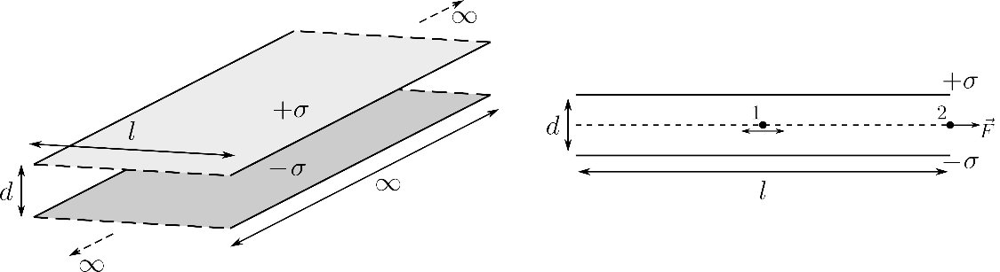

Задача 1. Електростатика
Част 1: Равновесие в статични полета [4,9 т.]
Естествен въпрос е дали може да се постави заряд в устойчиво равновесие в някакво електростатично поле. Отговорът е добре известен - теоремата на Ирншоу.
а) Докажете теоремата, която гласи, че не съществуват положения на устойчиво равновесие за даден произволен заряд в електростатично поле. [1,3 т.] Оказва се, че теоремата на Ирншоу е приложима и за дипол с фиксирано направление (например винаги насочен по оста x), поставен във външно електростатично поле.
б) Като използвате резултата от предната подточка, докажете теоремата на Ирншоу и за дипол с фиксирана ориентация. [1,6 т.] Когато малко тяло, съставено от диелектричен материал, се постави във външно електростатично поле E\vecext , то се поляризира и може да се моделира като точков дипол с диполен момент P\vec = $\beta$E\vecext за $\beta$ = $\gamma\zeta$0 $\partial$, където $\beta$ е поляризуемостта на тялото, $\partial$ = $\zeta$r * 1 е диелектричната възприемчивост, а $\gamma$ е величина зависеща от формата и размерите на тялото.
в) Определете потенциалната енергия W на такова тяло, изразена чрез външното поле E\vecext и поляризуемостта му $\beta$. [0,7 т.] Оказва се, че теоремата на Ирншоу е приложима и за малки тела, съставени от диелектричен материал - такива тела се намират в неустойчиво равновесие, независимо от направлението на отместване от равновесие. г)
Важи ли теоремата на Ирншоу за малки тела, съставени от магнитни материали? Възможна ли е магнитна левитация? [1,3 т.]
Част 2: Трептения [5,1 т.] Тънък неподвижен непроводящ пръстен с радиус R е зареден равномерно със заряд q. Точков заряд q с маса m е поставен в центъра на пръстена. Системата се намира във вакуум, далеч от други тела. Оста на пръстена съвпада с оста z, като z = 0 съвпада с равнината на пръстена, r е разстоянието до оста, а $\kappa$ е азимуталният ъгъл, т.е. изпозвани са цилиндрични координати. д) Намерете електричното поле E\vec (r, $\kappa$, z), създадено от пръстена, в близост до центъра. Отговора дайте във вида E\vec = (Er , E$\kappa$ , Ez ), изразени чрез r, z, $\kappa$ и други известни константи от условието, като r, z \gg R. [1 т.] е) Малко отклонение в кое направление (радиално по r или вертикално по z) води до хармонично трептене? Намерете периода T на тези трептения. Покажете, че равновесието в центъра е неустойчиво. [0,5 т.]
В центъра на полубезкраен плосък “кондензатор” с ширина l и разстояние между плочите d е поставена малко тяло, съставено от диелектричен материал, с поляризуемост $\beta$ и маса m (положение 1 на фиг.1). Плочите на кондензатора приемете за непроводящи и равномерно заредени с повърхнинна плътност на заряда съответно +$\varphi$ и *$\varphi$.

ж) Определете периода на малки трептения на частицата в хоризонтално направление. Отговора изразете чрез $\zeta$0 , $\beta$, $\varphi$, m, l, d. Приемете, че l \gtrsim d. [1,6 т.] Тялото е поставено на единия край на кондензатора, равноотдалечено от двете плочи (положение 2 на фиг. 1). з)
Определете големината и посоката на силата F, действаща на тялото. Отговора изразете чрез $\zeta$0 , $\beta$, $\varphi$, l, d. [0,5 т.]
В началния момент тялото е в покой на единия край на кондензатора (положение 2 на фиг. 1). и) Ако l \gtrsim\gtrsim d, определете периода на възникналите трептения. Отговора изразете чрез $\zeta$0 , $\beta$, $\varphi$, m, l, d. [1,5 т.] Полезна математика: 1
Разложение по ред на Маклорен: f(x) = f(0) + f ’ (0)x + 2 f ” (0)x 2 d 1 (arctan x) = dx 1 + x2
Задача 2. Рентгенови лъчи

На 8. ноември 1895 г. Вилхелм Рьонтген наблюдавал за пръв път наречените на негово име рентгенови лъчи. По-късно той прави и първата рентгенова снимка на ръката на жена си, която заявява, че е видяла смъртта, когато я вижда за пръв път. Рентгеновите лъчи (още известни като Х-лъчи) са тип електромагнитна (ЕМ) радиация с дължина на вълната от 0,01 nm - 10 nm, която намира широко приложение в днешно време. В тази задача ще бъдат разгледани различни начини за получаване на рентгеново лъчение.
Част 1: Катодно-лъчева тръба [0,7 т.] Рьонтген използва катодно-лъчева тръба, когато наблюдавал за пръв път рентгеновите лъчи. При нея отделени от анода електрони се ускоряват от ускоряващо напрежение U и се “забиват” в катода. При това, електронът изпитва голямо забавящо ускорение и следователно излъчва ЕМ лъчение, наречено спирачно лъчение (Bremsstrahlung). Полученият спектър на това лъчение има рязка граница при някаква минимална дължина на вълната $\nu$min .
а) Намерете минималната дължина на вълната $\nu$min . Определете минималното ускоряващо напрежение Umin , при което се наблюдават рентгенови лъчи. [0,6 т.]
б) Кохерентно ли е полученото по този начин лъчение? [0,1 т.]
Част 2: Лазер на свободни електрони (Free Electron Laser - FEL) [6,3 т.]

Лазерът на свободни електрони е един от найшироко използваните методи за генериране на къси интензивни кохерентни лазерни импулси на рентгенови лъчи с регулируема дължина на вълната. Той се състои от източник на електрони, линеен ускорител на електрони и т.нар. ондулатор (undulator). Eдин тип ондулатор, с дължина L, се състои от две успоредни последователности от магнити с редуваща се ориентация. Така се получава напречно магнитно поле, чиято индукция се мени приблизително синусоидално по дължината на ондулатора: \vec (z) = B0 sin(ku z) ey , B
ku = 2$\sigma$/$\nu$u
където $\nu$u e пространственият период на подредбата от магнити в ондулатора (разстоянието между два последователни магнита с еднаква ориентация). Въвежда се параметър на eB
ондулатора K = m ck0 . e
u
Линейният ускорител ускорява електроните до състояние с Лоренцов фактор1 $\delta$0 \gtrsim 1, които преди да навлязат в ондулатора имат скорост, насочена под ъгъл спрямо оста на ондулатора (оста z). Така под въздействието на магнитното поле в ондулатора, електроните се движат надлъжно по оста z, като извършват и напречно трептеливо движение около нея. в) Определете зависимостта на скоростта на електроните vx (z), vz (z) вътре в ондулатора. Определете средната скорост v̅z на движение по оста z. Отговорите изразете чрез K, $\delta$0 , ku , z. [1 т.] Трептеливото движение на електроните води и до излъчване на ЕМ вълни. ЕМ поле на тези вълни извършва работа върху тези електрони, което обуславя механизма за обмен на енергия между електроните и лъчението, т.е. така се получава и усилването на лъчението. г)
С каква поляризация ще бъде полученото лъчение? [0,2 т.]
Нека някъде в ондулатора вече се е генерирало ЕМ лъчение с кръгова честота $\theta$ и дължина на вълната $\nu$w , като амплитудата на вектора на електричното поле е E0 \gg cB0, т.е. E(z, t) = E0 sin(kw z * $\theta$t + $\omega_0$ ), където $\omega_0$ е някаква начална фаза и kw > 0. д) Намерете моментната мощност P(z, t) на силата в момент от време t, с които това ЕМ лъчение действа на даден електрон намиращ се в точка z. Отговорът изразете, чрез $\kappa$± = (kw ± ku )z * $\theta$t + $\omega_0$ - това са сборът и разликата на фазите на ЕМ вълната и магнитното поле. [1 т.]
1
v 2
Лоренцов фактор $\delta$ = 1/\propto1 * ( ) c
3
е) Като приемете, че vz = v̅z = const., намерете средната отдадена от електрона енергия dE
$\Delta$E
за единица изминато разстояние l в ондулатора ⟨ dz ⟩ = l . Резултата изразете, чрез $\kappa$±,0 = $\kappa$± (z0 ) и $\Delta\kappa$± = $\kappa$± (z0 + l) * $\kappa$±,0 . [0,8 т.] ж) При фиксирани параметри на ондулатора и навлизащите електрони, се наблюдава резонансно поведение в увеличението на лъчение с дължина на вълната $\nu$w = $\nu$r . Изразете $\nu$r чрез $\nu$u , $\delta$0 , K, като приемете, че $\delta$0 \gtrsim 1. [1 т.] з)
Колко трябва да бъде ускоряващото напрежение U в линейният ускорител на FEL с ондулатор с $\nu$u = 68 mm и B0 = 1.3 T, за да се получи лазерно лъчение в областта на мекия рентген ($\nu$w \approxeq 1 nm)? [0,2 т.]

По време на работата на такъв лазер, се наблюдава явлението microbunching, при което електроните се сгъстяват на места и разреждат на други, като по този начин се разделят на групички, които се разпространяват в ондулатора. Така се постига кохерентността на лъчението. и) Покажете, че при $\nu$w = $\nu$r ($\nu$u , $\delta$0 , K) електрон, преминаващ през ондулатора, има следните уравнения на движение: d$\kappa$ = 2ku $\theta\iota$ dz
d$\theta\iota$ KE0 e = 2 2 sin $\kappa$ dz 2$\delta$0 mc
$\delta$(z)
където $\kappa$ = $\kappa$+ и $\theta\iota$ = $\delta$ * 1 носят информация за положението и скоростта на 0
електрона. Приемете, че $\theta\iota$ \gg 1. [0,8 т.] й) С помощта на класическа механична аналогия, опишете качествено движението на електроните през ондулатора спрямо ЕМ лъчение. Покажете, че електроните се струпват около точки с $\kappa$ = $\kappa$bunch и определете разстоянието $\nu$ между два съседни bunch-а. [1,3 т.]
Част 3: Генериране на високи хармоники [3 т.]
Лазерът на свободни електрони е ефективен метод за генериране на кохерентна рентгенова светлина, но същевременно представлява един огромен уред, който употребява и много енергия. Съществува и друг метод за генериране рентгенов лазер с помощта на нелинейния оптичен процес на генериране на високи хармоники. В тази област има и българска следа в лицето на проф. Теньо Попминчев и неговия екип, чиято работа на практика направи този подход прагматичен. Генерирането на високи хармоники е нелинеен процес на взаимодействие на среда с лъчение с висока интензивност. При такова взаимодействие се поражда и светлина с честоти, кратни на фундаменталната честота f (честотата на падащото монохроматично лъчение). Генерираната светлина с честота nf наричаме n-та хармоника (n \sum \mathbb N).

Да разгледаме монохроматично лъчение с кръгова честота $\theta$ и висок интензитет I, попадащо в среда от разреден благороден газ или водород. В този случай генерирането на високи хармоники се описва добре от т.нар. 3-стъпков модел:
- Под въздействието на електричното поле на лъчението, електрон от външната обвивка на атом от газа тунелира. Така този атом претърпява тунелна йонизация. Приема се, че електронът се появява в покой непосредствено до точковия йон и че от този момент нататък той може да се счита за свободен.
- Под действието на осцилиращото електрично поле на лъчението, свободният електрон бива ускорен надалеч от йона и след това ускорен обратно към йона.
- Когато електронът отново стигне йона, те рекомбинират и се получава първоначалният неутрален атом, при което се отделя 1 фотон. Добре е да се отбележи, че процесът описан горе започва с тунелната йонизация на електрон, която може да стане по всяко време, независимо от фазата на лъчението в този момент. к) Оценете минималната интензивност Imin на лазерното лъчение, при която е приложим моделът. Известно е, че връзката между амплитудата на интензитета на електричното поле и интензитета на светлината е I = 2 c$\zeta$0 E 2 . Приемете, че газът е водород. [0,5 т.] л) Обяснете защо процесът на генерация на високи хармоники е неефективен, ако задвижващото лазерно лъчение е елиптично поляризирано. [0,4 т.] При трептене на заредена частица със заряд q и маса m в хармонично електрично поле E(t) = E0 cos $\theta$t, се въвежда величината пондеромоторен потенциал Up , който се дефинира като средната кинетична енергия на този заряд. м) Изразете Up чрез m, q, $\theta$, E0 . [0,4 т.] н) Покажете, че максималната енергия на фотон от генерираните високи хармоники при описаният процес е $\zeta$max = Ui + $\mu$Up , където Ui е йонизационният потенциал на външния електрон, и определете $\mu$ с точност до 1 знак след десетичната запетая. [1,5 т.]

о) Като използвате данните от фигурата, определете приблизително интензитета I на използваните лазерни импулси. Известно е, че йонизационният потенциал за аргона е 15.8 eV. [0,2 т.] Упътване: Разполагате с помощна графиката на функцията y = cos x, както и със спомагателна ос при x = 2, която е разграфена така, че точка с надпис a, е с координати (2, cos(a) + sin(a) (a * 2)). Можете да използвате тази графика за построяване на допирателни към y = cos x. Ако се наложи да чертаете графика, може да използвате празното пространство на помощната графика. Полезна математика: За x \gg 1:
(1 + x)$\beta$ = 1 + $\beta$x
5
Задача 3. Физика на ядрото Атомното ядро е съставено от протони и неутрони. Въпреки кулоновото отблъскване между протоните, ядрото остава свързано благодарение на остатъчното силно ядрено взаимодействие. Както електромагнитното взаимодействие си има своята частица преносител - фотонът, така и това взаимодействие има своята частица преносител - пион ($\sigma$). За разлика от фотона, пионът има ненулева маса, което обяснава близкодействието на това взаимодействие. а) Ако масата на пиона е m$\sigma$ = 135 MeV/c 2 , оценете радиуса r$\sigma$ на действие на остатъчното силно ядрено взаимодействие. [0,9 т.] Както е известно, масата на ядрото не е равна на сумата от масите на съставящите го частици. Разликата се нарича масов дефект. б) Изразете масовия дефект $\Delta$m = mя * (Zmp + Nmn ) чрез енергията на свързване на ядрото Eсв > 0. [0,3 т.] За да даде количествено обяснение на този дефект, през 1930 г. Георги Гамов предлага капков модел, според който ядрото се разглежда като капка от еднородна, несвиваема, равномерно заредена течност. в) Покажете, че радиусът на ядрото се дава от R = r0 A1/3 . Пресметнете r0 , ако е известно, че R( 210 84Po) = 7.2 fm. [0,4 т.] През 1935г. Карл Вайцзекер получава полуемпиричната формула, базирана на този модел, която добре описва енергията на свързване на средни и тежки ядра. Тя включва 4 основни члена - обемен (EV ), повърхнинен (ES ), Кулонов (EC ) и асиметричен (EA ): Eсв = EV + ES + EC + EA = aV fV (Z, A) * aS fS (Z, A) * aC fC (Z, A) * aA
(N * Z)2 A
където функциите fV,S,C (Z, A) са от вида Z $\beta$ A$\gamma$ . Обемният и повърхнинният терм са потенциалните енергии на остатъчното ядрено взаимодействие. Това взаимодействие е еднакво силно за протоните и неутроните. В този модел нуклоните на практика взаимодействат само със своите преки съседи, което е аналогично на взаимодействието на молекулите в една течност. По тази причина и тук се наблюдава явление подобно на повърхностното напрежение. г)
Имайки предвид полученото досега, аргументирайте се защо е добро приближение да се смята, че само съседните нуклони си взаимодействат чрез ядреното взаимодействие. [0,8 т.]
д) Намерете fV (Z, A) и fS (Z, A). [1,2 т.] Кулоновият член представлява електростатичната потенциална енергия на ядрото. е) Намерете fC (Z, A). Намерете и изчислете aC . Стойността представете в MeV. [1,7 т.] Оттук нататък приемете aV = 15.8 MeV, aS = 18.3 MeV, aC = 0.71 MeV, aA = 23.2 MeV. Мярка за стабилността на ядрата е средната енергия на свързване за нуклон, т.е. Eсв /A. ж) Намерете Z за най-стабилно ядро с дадено масово число A. Покажете, че за леките елементи Z = N, а за тежките Z < N и дайте качествено обяснение за това. [0,7 т.] з)
Оценете поредният номер Z и масовото число A на най-стабилните ядра. [0,9 т.] 6
През 1938 г. Отто Фриш и Фриц Щрасман наблюдават разпад на уран (Z = 92) до барий (Z = 56) и криптон (Z = 36) след бомбардиране с бавни неутрони. До тогава се е смятало за невъзможно да се отцепят толкова големи парчета от ядрото - особено от бавни неутрони. В края на същата година Лиза Майтнер (родена на 9. ноември) и Отто Хан обясняват процеса чрез капковия модел като следствие от предизвиканото от неутрона разтрептяване на капката и последващото ѝ разделяне. и) Като разгледате слабо деформирано ядро по капковия модел, покажете, че за ядра с Z 2 /A \cdot C сферичната капка е в неустойчиво равновесие и ядрото спонтанно се разпада. Изразете критичната стойност C чрез aS и aC и я изчислете. Пренебрегнете асиметричния член в полуемпиричната формула. [2,4 т.] й) Разпада ли се спонтанно 235 92U според този модел? [0,2 т.] 141 92 Разпадът на уран-235, предизвикан от неутрон, е n + 235 92U \Rightarrow 56Ba + 36Kr + 3n .
к) Определете енергията Q, която се e отделила при детонацията на атомната бомба “Little Boy” (Хирошима). Известно е, че само 0.9 kg уран-235 е претърпял разпад. Отговора представете в единици килотон тротил kt, където 1 kt = 4.2 \dots 1012 J. Пренебрегнете енергията на отделилите се неутрони. [0,5 т.] Забележка: Бомбата всъщност е имала общо 51kg уран-235!!! Полезна математика:
$$\text{За } x \ll 1: \quad (1+x)^\alpha \approx 1 + \alpha x + \frac{\alpha(\alpha-1)}{2} x^2$$ $$\arcsin x \approx x + \frac{x^3}{6} + \frac{3x^5}{40}$$
Енергия на равномерно зареден елипсоид $\displaystyle\left(a=b<c; e = \sqrt{1 - \frac{a^2}{c^2}}\right)$ $$W = \frac{3kQ^2}{5\sqrt[3]{a^2c}} (1 - e^2)^{\frac{1}{6}} \frac{\arcsin e}{e}$$
Площ на елипсоид $\displaystyle\left(a=b<c; e = \sqrt{1 - \frac{a^2}{c^2}}\right)$: $$S = 2\pi (a^2c)^{\frac{2}{3}} \left[ (1 - e^2)^{\frac{1}{3}} + \frac{\arcsin e}{e(1 - e^2)^{\frac{1}{6}}} \right]$$